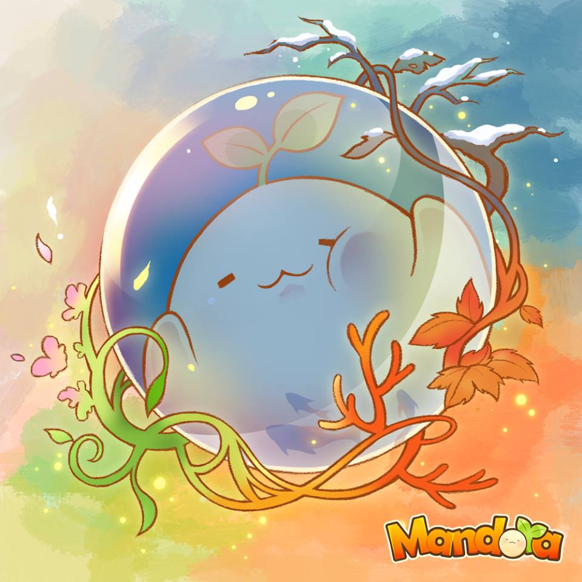

Mandora蔓陀蘿 : 關於
在今年初推出音樂節奏遊戲《Cytus》席捲全球之後，Rayark 雷亞遊戲在本月 23 號突然推出了一款風格截然不同的免費遊戲《蔓陀蘿（ Mandora）》，由於其可愛的角色設計、繪本風格的遊戲畫面，以及繁體中文的介面，引起了許多玩家的關注。以下就讓我們一起來進入《Mandora》的可愛世界吧。
治癒系蔓陀蘿全新面貌亮相!!
歡迎來到月貓村，這裡是巫師們最愛的園藝勝地，也是唯一在這個星球上可以找到蔓陀羅種子的地方。
蔓陀羅不但是強力的魔法提煉素材，月貓村甚至將這種介於植物與動物、魔法與科學之間的生物培養成巫師女巫之間最流行的飾品或寵物。 短短幾年之間，數百種蔓陀羅在魔法世界流行了起來。
《與臉書好友一起在生存模式裡競爭》
新增加的生存模式會隨著遊戲進行提高難度，還有專門啃蔓陀蘿葉子的菜蟲會來妨礙玩家。一邊克服重重困難一邊蒐集金幣來購買更具威力的道具，在森林中的菜園裡生存吧!
《在無限模式的月貓村農園裡盡情享受拔蔓陀蘿的樂趣》
玩家在遊戲中是負責收成蔓陀蘿的栽種師，在時限內盡可能拔出成熟的蔓陀蘿獲得高分，保持在連續拔出成熟蔓陀蘿 (Combo) 的狀態，就有機會得到稀有的新品種以及一瞬間提高分數的道具。
《超可愛的栽種日誌紀錄遊戲歷程》
收成後的蔓陀蘿品種會紀錄在栽種日誌中，玩家可以隨時回來翻閱並且聽聽他們被拔出土裡時的各種叫聲，或是找找還有哪些品種沒有被蒐集到，日誌內都會有提示喔~
《持續向上挑戰的稱號系統》
每次收成結束之後都會給予評價稱號，向最高稱號挑戰吧!
遊戲特色
- 熱鬧又瘋狂，使用各種道具與臉書好友排名一較高下的生存模式
- 能夠不斷超越向無上限的遊戲紀錄挑戰的無限模式
- 超過 45 種可愛又逗趣的蔓陀蘿寶寶，吵鬧又治癒的迷人角色
- 精緻讓人愛不釋手的繪本風格栽種日誌，在這裡回顧已經收成的蔓陀蘿
- 農場紀錄：個人遊戲歷程，各種有趣的統計數據
- 貼心互動教學模式，讓第一次接觸的人輕鬆上手
- 60 種以上的遊戲評價稱號
- 支援中、日、英、韓、葡、西、法 7 種語系
可愛風手機休閒遊戲《Mandora》3.0 改版正式上線囉!!
本次改版遊戲在生存模式中增加了季節變化和 24 種全新品種的 Mandora。
月貓村四季分明，在夏日烈陽或是秋天楓紅中，農場裡可能會有海妖或是月兔出沒，喜歡收藏珍稀品種的玩家，可在免費更新完遊戲之後，蒐集到本次新增的 24 種夏天和秋天新品種。此外遊戲的生存模式也追加了季節的設定，特殊時間品種不必再調整裝置的時間即可取得。